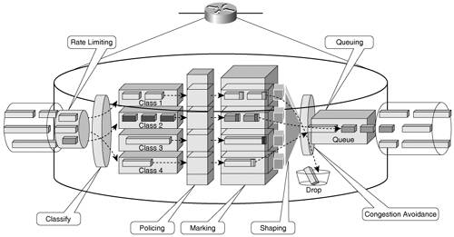

Chapter 5. Implementing QoSThe rapid adoption of IP communications and the deployment of more complex and bandwidth-demanding applications led to a tremendous increase in network use. In a network with limitless resources, this would not be an issue. Although the technology is available to throw bandwidth and more powerful switching nodes at the problem, that is not always the best solution. A TCP session, for example, tries to use as much bandwidth as is available, to the detriment of other IP flows using the same links. Regardless of bandwidth, links can become congested due to various factors such as backing up failed paths in the network or handling the unpredictable traffic resulting from a security attack. At the same time, upgrading links and network nodes to handle higher bandwidths usually is an expensive proposition. Companies will try to make the most of the existent infrastructure and increase their return on investments (ROI). Concerted proactive measures can limit the probability that congestion will occur, but ultimately, traffic congestion is a fact of life in any network. Under such circumstances, the network operator must decide how to manage it and how to allocate the network resources based on traffic types. Congestion-management mechanisms should be considered regardless of the bandwidth available. Networks provide a service to applications by transporting their data. Different application types have different expectations from this service; they demand a certain quality of service (QoS). These expectations are for the entire path of the traffic, making QoS an end-to-end concept. Applications such as interactive voice communications, audio, and video are sensitive to delay and delay variations (jitter), but they can afford to lose randomly a small percentage of the traffic. At the other end of the spectrum are the mission-critical applications that need reliable, no-loss data transfers. The service level needs of any type of traffic can generally be quantified through a set of parameters such as the following:
For any given service, the target values for such parameters are listed in a service level agreement (SLA). The SLA can represent the internal network performance goals of an enterprise. It can also represent a contractual agreement between a service provider and its customers. To meet the requirements of SLAs, the network has to be able to identify different types of traffic, to reserve bandwidth, to improve the loss characteristics, to avoid and manage congestion, and to prioritize the traffic. These functions are performed by routers and switches across the entire network in the context of an end-to-end QoS deployment model. Two such models are identified in the case of IPv4:
Network elements leverage several mechanisms that enable them to support the implementation of these IP QoS models, as follows:
Figure 5-1 schematically captures these mechanisms as they operate within a router. Figure 5-1. QoS Mechanisms in a RouterThese mechanisms are implemented the same way in both versions of IP. A number of books focus specifically on this topic, such as IP Quality of Service, by Srinivas Vegesna. Table 5-1 lists the QoS features supported by Cisco platforms both IPv4 and IPv6 along with layer 2 QoS features.
Table 5-1 shows that in Cisco products only a limited number of IPv4 QoS features are not available for IPv6 at the time of this writing. Because of the many similarities between IPv4 and IPv6 QoS, this chapter focuses on the few things that differentiate them today. This chapter covers the following topics:
It is assumed that the reader is familiar with fundamental concepts of IPv4 QoS. You can apply this knowledge directly toward deploying IPv6 QoS. |